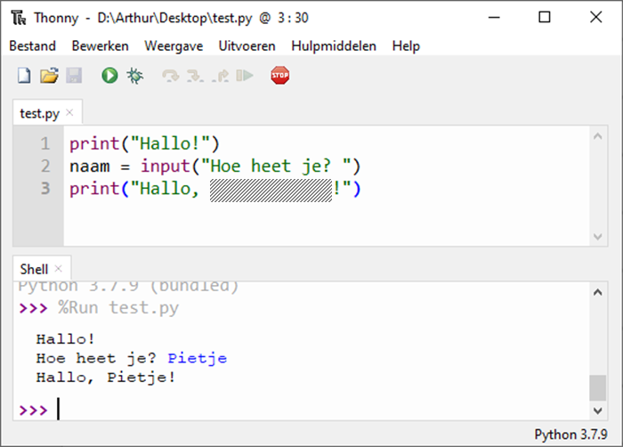

Q-highschool / Bijeenkomst 4
Welk Python commando gebruik je om iets te vragen?
getprintinputaskWat print dit programma?
stad = input("Waar woon je? ")
print("Je woont in:")
print(stad)
Waar woon je? Greffelkamp
Wat staat op de verborgen plek?
" + naam + "+ naam +naamstr(naam)
Staat in de syllabus
informatica.q-highschool.nl/basis_programmeren/2526-1/4_loops.html
Fysieke bijeenkomst van 14.30 - 16.00
Breng je opgeladen laptop en lader mee!